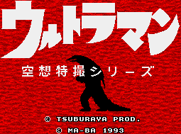

Ultraman - Genesis Games

Controls
- A button: Kick
- B button: Punch
- C button: Jump
- Start: Pause
This is a fighting game that pits Ultraman against his evil monster foes. There are special attacks that you can use
against your opponent, but I have not figured out how to block special attacks (the monsters have blocked mine, so I am
guessing you can block their special attacks). Here is a list of the moves I have found:
- A+B: Fire an energy beam
- Down+Forward: Roll towards the enemy
- Down+Back: Do a backflip
- Down+B: Put up an energy shield
- Up+Back+C: Super jump backwards
- Up+Forward+C: Super jump forward
From Don Switzer:
The energy beam you fire works the same way as the SNES Ultraman game. A meter at the top of the screen goes thru
L1 - L4. Hitting the monster with L4 when Finish flashes will end the level. As the power meter increases,
Down+B loops the L1 - L4 counter.
Anime Video Game Resource Center © 1998 by Luis A. Cruz